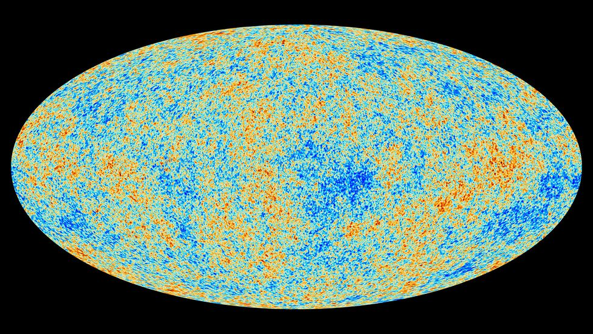
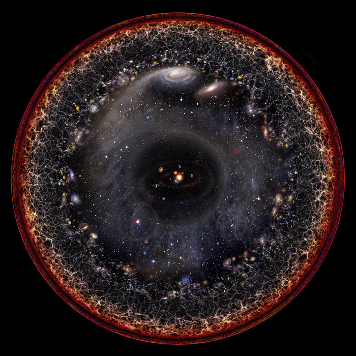
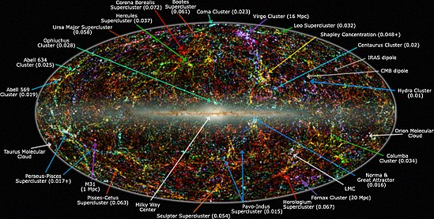

The observable universe is a ball-shaped region of the universe comprising all matter that can be observed from Earth or its space-based telescopes and exploratory probes at the present time; the electromagnetic radiation from these objects has had time to reach the Solar System and Earth since the beginning of the cosmological expansion. Initially, it was estimated that there may be 2 trillion galaxies in the observable universe. That number was reduced in 2021 to only several hundred billion based on data from New Horizons. Assuming the universe is isotropic, the distance to the edge of the observable universe is roughly the same in every direction. That is, the observable universe is a spherical region centered on the observer. Every location in the universe has its own observable universe, which may or may not overlap with the one centered on Earth.
The word observable in this sense does not refer to the capability of modern technology to detect light or other information from an object, or whether there is anything to be detected. It refers to the physical limit created by the speed of light itself. No signal can travel faster than light. Hence there is a maximum distance, called the particle horizon, beyond which nothing can be detected, as the signals could not have reached us yet. Sometimes astrophysicists distinguish between the observable universe and the visible universe. The former includes signals since the end of the inflationary epoch, while the latter includes only signals emitted since recombination.
According to calculations, the current commoving distance to particles from which the cosmic microwave background radiation (CMBR) was emitted, which represents the radius of the visible universe, is about 14.0 billion parsecs (about 45.7 billion light-years). The commoving distance to the edge of the observable universe is about 14.3 billion parsecs (about 46.6 billion light-years), about 2% larger. The radius of the observable universe is therefore estimated to be about 46.5 billion light-years.
